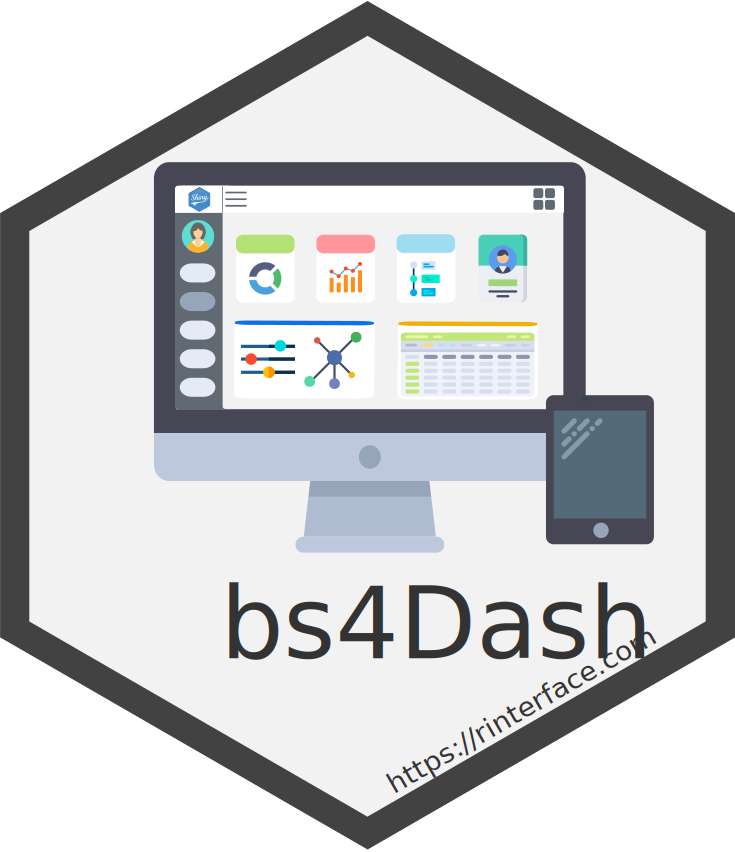

Production-ready UIs for Shiny
Dr. David Granjon, Novartis
Scientific Computing and Consulting
About Me
-
2011-2013
Master’s degree
Université Claude Bernard LyonMathematics and Computer Sciences
-
2013-2016
PhD in Life Sciences
Université Pierre et Marie Curie and Université de LausanneThesis Title: «Modeling of Calcium and Phosphate Homeostasis in the Rat and its perturbations»
-
2016-2019
PostDoc Researcher
Université de Lausanne and University of ZurichDevelop web applications, package HTML templates into reusable R APIs, virtual machines management, design relevant educational content.

My current position
Principal Scientific Consultant at Novartis
-
Scientific Computing and Consulting group
Develop web applications, package HTML templates into reusable R APIs, virtual machines management, design relevant educational content.
- This is secret ;)
Dashboard examples
How to bridge the gap?
About RinteRface (https://rinterface.com)
RinteRface, a comprehensive set of UI APIs
shinydashboardPlus
bs4Dash 
Virtual Patient

Toward Native Apps
tablerDash
Future Plans
-
Improve
documentation, RinteRfaceVerse, more input/output bindings
-
Develop
new frameworks: shinyF7 (miniUI 2.0), UIKit, ...
-
Communicate
useR, satRdays, workshops, meetups
Dedicated Youtube channel
-
Collaborate
Want to help us?
Thank you!
To stay updated: @divadnojnarg on
https://github.com/DivadNojnarg/
https://rinterface.com